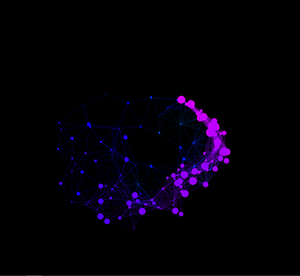

These are particles following the mouse and mouseclick. There is the use of distances between objects and uses right triangles and their hypotenuse to draw the straight lines from the circles.

Fibonacci series increases by adding the previous two numbers. It starts with 0, 1, 1, 2, 3, 5, 8, etc. the formula is: Fn = Fn-1 + Fn-2 It is seen in the sunflower and pinecones. The Javascript uses sine and cosine math functions.